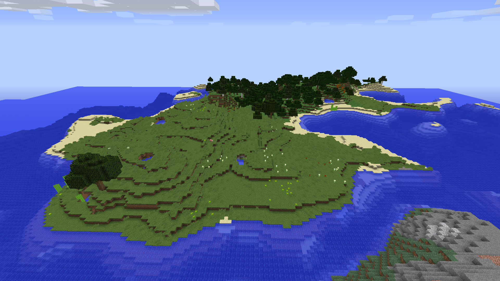
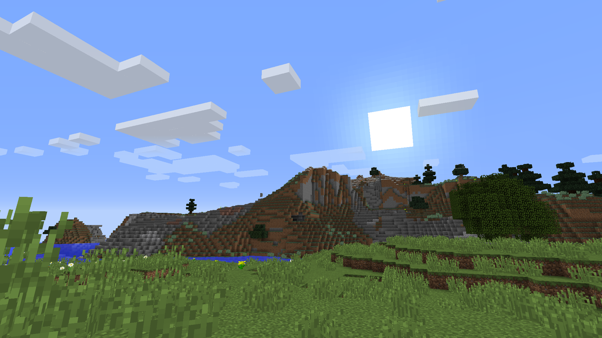

Welcome to Oversimplified Minecraft Mods (OMM)


My goal is to focus on bigger mods that have a lot of content, as that’s where I tend to start when building modpacks or looking into adding mods to my single player games. I also want to be sure to pick mods that I feel accomplish the same or at least similar goals, whether that be adding technology and automation, to organization, farming utilities, or simply offering additional ways to explore playstyles. Even though a lot of my content could be argued as personal opinion, I aspire to be as genuine and fair as possible, giving mods equal pros and cons and appealing to the strengths, not just the weaknesses, of each.